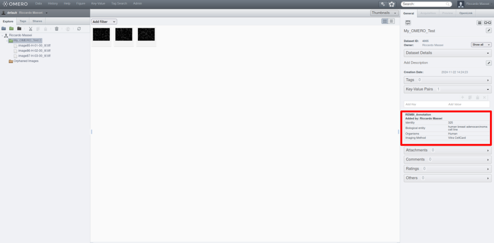
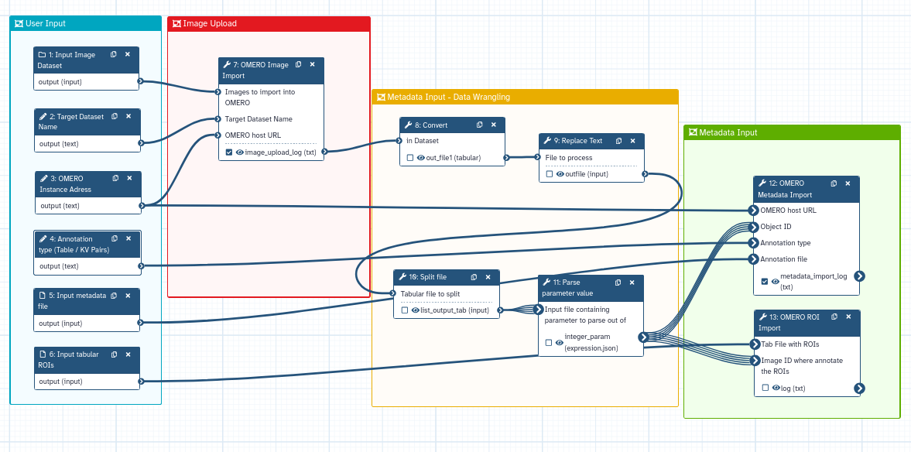
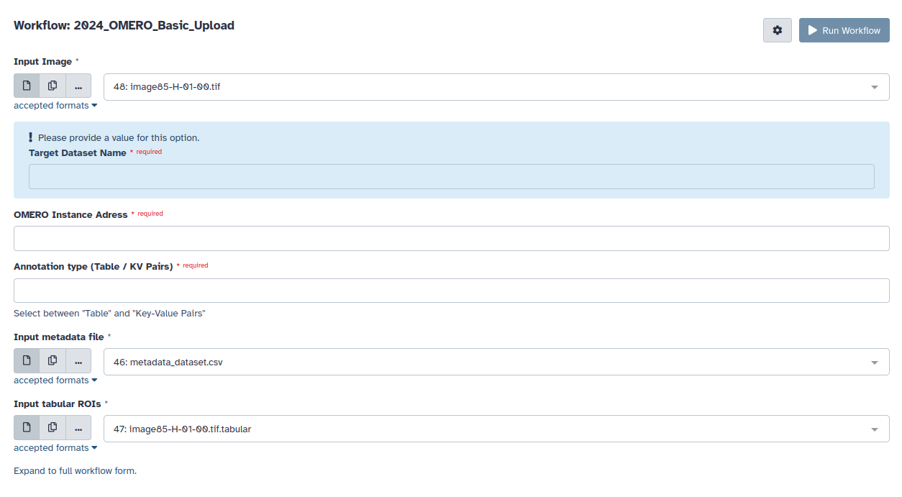

Overview of the Galaxy OMERO-suite - Upload images and metadata in OMERO using Galaxy
| Author(s) |
|
| Editor(s) |
|
OverviewQuestions:
Objectives:
How can I use Galaxy to upload images and metadata into OMERO?
Which are the different tools of the Galaxy OMERO-suite?
Requirements:
Understand how the different tools of the Galaxy OMERO-suite works
Build a complete pipeline for image and metadata upload into OMERO
- Introduction to Galaxy Analyses
- tutorial Hands-on: FAIR Bioimage Metadata
- tutorial Hands-on: REMBI - Recommended Metadata for Biological Images – metadata guidelines for bioimaging data
Time estimation: 1 hourLevel: Intermediate IntermediateSupporting Materials:Published: Dec 4, 2024Last modification: Dec 4, 2024License: Tutorial Content is licensed under Creative Commons Attribution 4.0 International License. The GTN Framework is licensed under MITversion Revision: 1
The efficient and accurate treatment of microscopy metadata is of great importance, as it provides insights that are essential for effective image management, search, organisation, interpretation, and sharing. Considering this, it is vital to find ways to properly deal with the huge amount of complex and unstructured data for implementing Findable, Accessible, Interoperable and Reusable (FAIR) concepts in bio-imaging.
One of the most flexible and used open-source tools for image and metadata management can be identified as OMERO (Open Microscopy Environment Remote Objects). OMERO is an open-source software platform designed to manage, visualise, and analyse large sets of biological image data. Developed by the Open Microscopy Environment consortium, OMERO provides researchers with a centralised repository to store images and metadata, tools for collaborative sharing, and advanced functionalities for image processing and analysis.
In this tutorial, you will learn how to use the different tools of the Galaxy OMERO-suite. The Galaxy OMERO-suite is based on the Python packages omero-py and ezomero, and it allows interactively building pipelines to upload and fetch image data in OMERO using a Galaxy workflow. Images can automatically be enriched with metadata (i.e. key-value pairs, tags, raw data, regions of interest) and uploaded to an OMERO server. The tools give the possibility to the user to intuitively fetch images from the local server and perform image analysis.
AgendaIn this tutorial, we will cover:
- Learn the different tools of the Galaxy OMERO-suite to manage image data and metadata
- Get data from an OMERO instance using the Galaxy OMERO-suite
- Build a pipeline for image and metadata upload into OMERO
Before Starting - Set up the OMERO credentials
Before starting you need to set up your OMERO credential. This is necessary to connect to a target OMERO instance and needs to be performed just one time.
The OMERO credentials have to be saved in your preferences (User → Preferences → Manage information).

This feature is embedded in Galaxy and needs to be enabled by the admin of the server you are using. You can now use it in UseGalaxy.eu or ask your admin to add it. For more info about the configuration on the admin side, please take a look at the README file of the tool.
Please Notice: The configuration file, which contains your OMERO password and username, will be stored in the job working directory. This directory only exists during the runtime of the job and should only be accessible by the system user that runs the job. However, please be aware that your username and password may be exposed to users with administrative rights. We are working on increasing the security of the OMERO suite
Prepare your data
We need a dataset to upload into your OMERO instance. To this end, we have prepared an integrative dataset with images, metadata and regions of interest (ROIs) in Zenodo.
Data Upload - Image, metadata and ROI files
Hands-on: Data Upload
Create a new history for this tutorial in Galaxy.
To create a new history simply click the new-history icon at the top of the history panel:
- Import the nuclei imaging data from Zenodo or from the shared data library:
- Important: Choose the correct data type if prompted.
https://zenodo.org/records/14205500
- Copy the link location
Click galaxy-upload Upload Data at the top of the tool panel
- Select galaxy-wf-edit Paste/Fetch Data
Paste the link(s) into the text field
Press Start
- Close the window
As an alternative to uploading the data from a URL or your computer, the files may also have been made available from a shared data library:
- Go into Data (top panel) then Data libraries
- Navigate to the correct folder as indicated by your instructor.
- On most Galaxies tutorial data will be provided in a folder named GTN - Material –> Topic Name -> Tutorial Name.
- Select the desired files
- Click on Add to History galaxy-dropdown near the top and select as Datasets from the dropdown menu
In the pop-up window, choose
- “Select history”: the history you want to import the data to (or create a new one)
- Click on Import
Select the following files:
image85-H-01-00.tifimage85-H-01-00.tif.tabularimage86-H-02-00.tifimage86-H-02-00.tif.tabularimage87-H-03-00.tifimage87-H-03-00.tif.tabularmetadata_dataset.csv- Tag each dataset with a label like “image” (tif files), “rois” (tabular files) and “metadata” (CSV file) for easy identification

Upload images and metadata
In this section, we will focus on how uploading images and metadata into a user-defined OMERO instance. This is done by using the OMERO Image Import and OMERO Metadata Import tools.
Step 1: Image Upload
Hands-on: Upload images into OMERO
- OMERO Image Import ( Galaxy version 5.18.0+galaxy3) with the following recommended parameters:
- param-file Images to import into OMERO: You can select here different files to import into OMERO. Select the datasets
image85-H-01-00.tif,image86-H-02-00.tifandimage87-H-03-00.tif- OMERO host URL: Input the URL of your OMERO instance.
- OMERO port: Input the OMERO port (pre-defined value, 4064)
- param-file Target Dataset Name: Type “My_OMERO_Test”
A log file text file will be created with the OMERO ID of the newly imported images
After tool execution, you can check the images in your OMERO instance!

Obviously, the Dataset and Image ID change according to your instance… In this case, we have created a new dataset called “My_OMERO_Test” with ID 4005, while images have IDs 30781, 30782 and 30783.
Step 2: Upload metadata
You can upload two different kinds of metadata files using the OMERO-suite.
- Key Value Pairs: Useful for displaying dataset and image metadata in OMERO.web. Key Value pairs are for unstructured data where every object can have different keys, and they can be easily edited ad-hoc by users.
- Tables: Useful for showing results for multiple images at the same time. Tables are suitable for e.g. analysis results or large structured data, columns have defined types (kv pairs are all strings) and can be queried like a database table.
We will learn now how to upload Key-Value pairs using the OMERO Metadata Import tool
Hands-on: Upload Key-Value Pairs into OMERO
- OMERO Metadata Import ( Galaxy version 5.18.0+galaxy3) with the following recommended parameters:
- param-file Annotation file:
metadata_file.tsv- OMERO host URL: Input the URL of your OMERO instance.
- OMERO port: Input the OMERO port (pre-defined value, 4064)
- param-file Target Object Type: Select “Dataset”
- Selection: Select “Target an existing object”
- Object ID: Input the ID of the previously created dataset. 4005 for this training
- Annotation type: Select “KV”
- Annotation Name: Type “REMBI_Annotation”
Switch back to your OMERO instance. The Key Values are now in OMERO, associated with a target dataset! Well done! 
Upload region of interest (ROIs)
OMERO support the ROI visualization in OMERO.viewer. In this section you will learn to associate ROIs coordinates to an image stored in OMERO using the OMERO ROI Import tool.
Please note that this tool supports just polygon ROIs given in a specific format. The tool Analyze particles can automatically create the ROIs in this specific format.
Check the roi_file.tsv to have an example. Everything is explained in the tools help section!
Hands-on: Upload images into OMERO
- OMERO ROI Import ( Galaxy version 5.18.0+galaxy4) with the following recommended parameters:
- param-file Tab File with ROIs:
roi_file.tsv- OMERO host URL: Input the URL of your OMERO instance.
- OMERO port: Input the OMERO port (pre-defined value, 4064)
- Image ID where annotate the ROIs: Select the image ID where to annotate the ROIs. We will go for 30782
Switch back to your OMERO instance and the image by double-clicking it.
This will open the OMERO.viewer.
Go now to the “ROIs” sub-panel.
The ROIs are now annotated in OMERO and associated with the target image! Awesome!

Get OMERO object IDs and Annotations
You can get information on projects, datasets and image IDs. Furthermore, you can fetch annotations and tables associated with an OMERO object. This is done with the OMERO get IDs and OMERO get Object tools, respectively.
First of all, let’s try to get all the image IDs present in all Datasets!
Hands-on: Upload images into OMERO
- OMERO get IDs ( Galaxy version 5.18.0+galaxy0) with the following recommended parameters:
- OMERO host URL: Input the URL of your OMERO instance.
- OMERO port: Input the OMERO port (pre-defined value, 4064)
- Type of object to fetch ID:: Select “Dataset IDs”
- Which datasets?: Select “All datasets”
- ID of the project: 0
Since we have just one dataset in your OMERO instance, the tool will produce a tabular file with the IDs of the three images we just uploaded.
| 1 |
|---|
| 30781 |
| 30782 |
| 30783 |
Now, let’s try to get an annotation file…
Hands-on: Get an annotation file from OMERO
- OMERO get Object ( Galaxy version 5.18.0+galaxy0) with the following recommended parameters:
- OMERO host URL: The target OMERO host URL
- OMERO port: The OMERO port, pre-defined to 4064
- Type of object to fetch:: Select “Annotation”
- How do you provide the ID(s) of the OMERO object?: Select “Comma separated values”
- ID(s) of the object(s) to fetch on OMERO separated by comma: 4005
Perfect, you fetched the Annotation file “REMBI_Annotation”. OMERO get Object is particularly useful when you want to fetch data associated with your dataset or images!
Filter OMERO object based on filename, tags and Key-Value Pairs
Finally, you filter OMERO objects based on their features… One option is to filter by filename, a useful parameter to apply if you want to get certain images.
This can be done by using the OMERO IDs Tool
Hands-on: Upload images into OMERO
- OMERO IDs ( Galaxy version 5.18.0+galaxy0) with the following recommended parameters:
- OMERO host URL: The target OMERO host URL
- OMERO port: The OMERO port, pre-defined to 4064
- Filename to search among the image IDs: Type
image85-H-01-00_tif.tiff- List of images IDs: Type 30781,30782,30783
As an output, you will have a tabular file with the following info:
| 1 |
|---|
| 30782 |
Which is ID associated to the image with file name “image85-H-01-00_tif.tiff”!
However, you can also use this tool to fetch images with specific file names or tags, making data fetching an easy task…
A full workflow for data management with the OMERO suite
In this section, you will learn to integrate all the different tools to build a workflow for uploading an images, metadata and ROIs into OMERO.
Step 1 - Define the OMERO inputs
To make the workflow work, you need to define six inputs.
This will make this workflow reusable with different datasets.
Hands-on: Create the inputs for the OMERO pipeline
Create a new workflow in the workflow editor.
- Click Workflow on the top bar
- Click the new workflow galaxy-wf-new button
- Give it a clear and memorable name
- Clicking Save will take you directly into the workflow editor for that workflow
- Need more help? Please see the How to make a workflow subsection here
- Select tool Input dataset collection from the list of tools:
- param-collection 1: Input dataset collection appears in your workflow. Change the “Label” of this input to Input image Dataset.
- Add two tool Input dataset:
- param-file 2: Input Dataset and param-file 3: Input Dataset appears in your workflow. Change the “Label” of these inputs to Input Tabular ROIs and Input Metadata File
- Add three toolSimple Input for Workflow Logic:
- 4: Simple input for workflow logic, 5: Simple input for workflow logic, 6: Simple input for workflow logic appear in your workflow. Change the “Label” of these inputs to Target Dataset Name, OMERO instance address and Annotation type
Step 2 - OMERO Import
We now add the step for the image import
Hands-on: Add the image upload step to the workflow
- While in the workflow editor add OMERO Image Import ( Galaxy version 5.18.0+galaxy3) from the list of tools:
- Connect the output of param-file 1: Input image Datasets to the “Images to Import in OMERO” input of tool 7: OMERO Image Import.
- Connect the output of param-file 4: Target Dataset Name to the “Target Dataset Name” input of tool 7: OMERO Image Import.
- Connect the output of param-file 5: OMERO instance address to the “OMERO host url” input of tool 7: OMERO Image Import.
Step 3 - Dynamically parse image IDs
We need now a small series of steps to get the ID of the image we just upload into OMERO This can be done with the following tool sequence:
Hands-on: Parse Images IDs
- Add tool Convert from the list of tools:
- Connect the output of tool 7: OMERO Image Import to the tool 8: Convert input
- Add tool Replace text from the list of tools:
- Connect the output of tool 8: Convert to the tool Replace text input
- Add tool Split File from the list of tools:
- Connect the output of tool 9: Replace text to the tool 10: Split File
- Add tool Parse parameter value from the list of tools:
- Connect the output of tool 10: Split File to the tool 11: Parse parameter value
We got the OMERO image ID! We can now use it as an input for next sequence of tools…
Step 4 - Metadata and ROIs input
The last section is to upload metadata and ROIs
Hands-on: Add tools to upload metadata and ROIs
- Add OMERO Metadata Import ( Galaxy version 5.18.0+galaxy3) from the list of tools:
- Connect the output of param-file 5: OMERO instance address to the “OMERO host url” input of tool 12: OMERO Metadata Import.
- Connect the output of param-file 11: Parse parameter value to the “Object ID” input of tool 12: OMERO Metadata Import.
- Connect the output of param-file 6: Annotation type to the “Annotation type” input of tool 12: OMERO Metadata Import.
- Connect the output of param-file 3: Input Metadata File to the “Annotation file” input of tool 12: OMERO Metadata Import.
- Add OMERO ROI Import ( Galaxy version 5.18.0+galaxy4) from the list of tools:
- Connect the output of param-file 5: OMERO instance address to the “OMERO host url” input of tool 13: OMERO ROI Import.
- Connect the output of param-file 2: Input Tabular ROIs to the “Tab File with ROIs” input of tool 13: OMERO ROI Import.
- Connect the output of param-file 11: Parse parameter value to the “Image ID where annotate the ROIs” input of tool 13: OMERO ROI Import.
- Save your workflow and name it
OMERO_basic_upload.
You are done! The final workflow should look like this: 
And you can easily add all parameters during the workflow invocation: 
This workflow can be easily re-used or turned into a sub-workflow for an image processing pipeline.
Conclusion
In this exercise, you imported images into OMERO using Galaxy. You also learn how to import metadata and ROIs, as well as get information such as image ID and annotation file from a target OMERO instance.
References
- Allan, C., Burel, JM., Moore, J. et al. OMERO: flexible, model-driven data management for experimental biology. Nat Methods 9, 245–253 (2012). https://doi.org/10.1038/nmeth.1896
- Wilkinson, M., Dumontier, M., Aalbersberg, I. et al. The FAIR Guiding Principles for Scientific Data Management and stewardship. Sci Data 3, 160018 (2016). https://doi.org/10.1038/sdata.2016.18
You've Finished the Tutorial
Key points
Proper data management plays an important role in image processing
Galaxy can facilitate the integration of data management tools into an image processing pipeline
The OMERO-suite allows to easily manage by building a FAIR pipeline
Frequently Asked Questions
Have questions about this tutorial? Check out the FAQ page for the Imaging topic to see if your question is listed there. If not, please ask your question on the GTN Gitter Channel or the Galaxy Help ForumUseful literature
Further information, including links to documentation and original publications, regarding the tools, analysis techniques and the interpretation of results described in this tutorial can be found here.
Feedback
Did you use this material as an instructor? Feel free to give us feedback on how it went.
Did you use this material as a learner or student? Click the form below to leave feedback.
Citing this Tutorial
- Riccardo Massei, Overview of the Galaxy OMERO-suite - Upload images and metadata in OMERO using Galaxy (Galaxy Training Materials). https://training.galaxyproject.org/training-material/topics/imaging/tutorials/omero-suite/tutorial.html Online; accessed TODAY
- Hiltemann, Saskia, Rasche, Helena et al., 2023 Galaxy Training: A Powerful Framework for Teaching! PLOS Computational Biology 10.1371/journal.pcbi.1010752
- Batut et al., 2018 Community-Driven Data Analysis Training for Biology Cell Systems 10.1016/j.cels.2018.05.012
@misc{imaging-omero-suite, author = "Riccardo Massei", title = "Overview of the Galaxy OMERO-suite - Upload images and metadata in OMERO using Galaxy (Galaxy Training Materials)", year = "", month = "", day = "", url = "\url{https://training.galaxyproject.org/training-material/topics/imaging/tutorials/omero-suite/tutorial.html}", note = "[Online; accessed TODAY]" } @article{Hiltemann_2023, doi = {10.1371/journal.pcbi.1010752}, url = {https://doi.org/10.1371%2Fjournal.pcbi.1010752}, year = 2023, month = {jan}, publisher = {Public Library of Science ({PLoS})}, volume = {19}, number = {1}, pages = {e1010752}, author = {Saskia Hiltemann and Helena Rasche and Simon Gladman and Hans-Rudolf Hotz and Delphine Larivi{\`{e}}re and Daniel Blankenberg and Pratik D. Jagtap and Thomas Wollmann and Anthony Bretaudeau and Nadia Gou{\'{e}} and Timothy J. Griffin and Coline Royaux and Yvan Le Bras and Subina Mehta and Anna Syme and Frederik Coppens and Bert Droesbeke and Nicola Soranzo and Wendi Bacon and Fotis Psomopoulos and Crist{\'{o}}bal Gallardo-Alba and John Davis and Melanie Christine Föll and Matthias Fahrner and Maria A. Doyle and Beatriz Serrano-Solano and Anne Claire Fouilloux and Peter van Heusden and Wolfgang Maier and Dave Clements and Florian Heyl and Björn Grüning and B{\'{e}}r{\'{e}}nice Batut and}, editor = {Francis Ouellette}, title = {Galaxy Training: A powerful framework for teaching!}, journal = {PLoS Comput Biol} }
Funding
These individuals or organisations provided funding support for the development of this resource
Congratulations on successfully completing this tutorial!
{kind=link}
{kind=link}
{kind=link}
You can use Ephemeris's
shed-tools installcommand to install the tools used in this tutorial.shed-tools install [-g GALAXY] [-a API_KEY] -t <(curl https://training.galaxyproject.org/training-material/api/topics/imaging/tutorials/omero-suite/tutorial.json | jq .admin_install_yaml -r)Alternatively you can copy and paste the following YAML
--- install_tool_dependencies: true install_repository_dependencies: true install_resolver_dependencies: true tools: - name: omero_filter owner: ufz revisions: 375281d11535 tool_panel_section_label: Imaging tool_shed_url: https://toolshed.g2.bx.psu.edu/ - name: omero_get_id owner: ufz revisions: ae07ea142e0f tool_panel_section_label: Imaging tool_shed_url: https://toolshed.g2.bx.psu.edu/ - name: omero_get_value owner: ufz revisions: 9a50e57339d8 tool_panel_section_label: Imaging tool_shed_url: https://toolshed.g2.bx.psu.edu/ - name: omero_import owner: ufz revisions: 18b86dcdd421 tool_panel_section_label: Imaging tool_shed_url: https://toolshed.g2.bx.psu.edu/ - name: omero_metadata_import owner: ufz revisions: 351c6b43e16c tool_panel_section_label: Imaging tool_shed_url: https://toolshed.g2.bx.psu.edu/ - name: omero_roi_import owner: ufz revisions: 131470834fee tool_panel_section_label: Imaging tool_shed_url: https://toolshed.g2.bx.psu.edu/